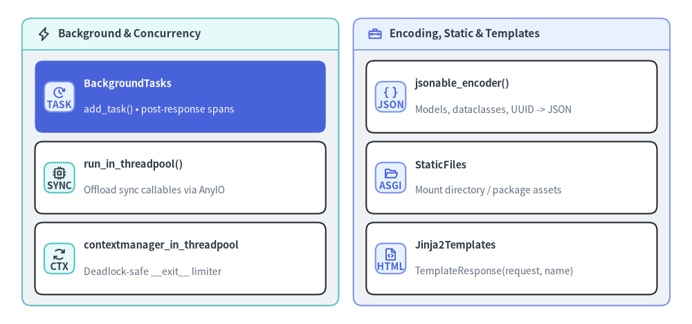

fastapi.background & utilities
レスポンス送信後のバックグラウンドタスク実行（fastapi.background）、JSON 互換プリミティブへの再帰変換（fastapi.encoders）、AnyIO ワーカースレッドプール実行ヘルパー（fastapi.concurrency）、ASGI 静的ファイル配信（fastapi.staticfiles）、および Jinja2 サーバーサイド HTML テンプレート描画（fastapi.templating）のリファレンスです。

classBackgroundTasks#
Starlette の BackgroundTasks を継承する fastapi.background のクラス（from fastapi import BackgroundTasks としても公開）です。ルートハンドラや Depends() 依存関数の引数に型注釈するだけで FastAPI が自動的にインスタンスを注入し、依存階層とエンドポイントで登録されたタスクを統合します。クライアントへの HTTP レスポンス送信完了後に、各タスクを fastapi.background_task OpenTelemetry 子スパン付きで順次実行します。
from collections.abc import Sequence
from starlette.background import BackgroundTask
from starlette.background import BackgroundTasks as StarletteBackgroundTasks
class BackgroundTasks(StarletteBackgroundTasks):
def __init__(self, tasks: Sequence[BackgroundTask] | None = None) -> None: ...
async def __call__(self) -> None: ...
パラメータと属性#
| 名前 | 型 | デフォルト | 説明 |
|---|---|---|---|
tasks |
Sequence[BackgroundTask] | None |
None |
手動でインスタンス化する際（Response(background=...) に直接渡す場合など）の初期 BackgroundTask 列。 |
self.tasks |
list[BackgroundTask] |
[] |
レスポンス完了後に登録順で順次実行されるタスクのミュータブルリスト。 |
使用例#
from fastapi import BackgroundTasks, Depends, FastAPI
from fastapi.testclient import TestClient
app = FastAPI()
events: list[str] = []
def record_audit(background_tasks: BackgroundTasks) -> str:
background_tasks.add_task(events.append, "dependency-audit")
return "audited"
@app.post("/jobs/{job_id}")
async def enqueue_job(
job_id: str,
background_tasks: BackgroundTasks,
status: str = Depends(record_audit),
) -> dict[str, str]:
background_tasks.add_task(events.append, f"job:{job_id}")
return {"job_id": job_id, "status": status}
client = TestClient(app)
res = client.post("/jobs/42")
assert res.status_code == 200
assert events == ["dependency-audit", "job:42"]
methodBackgroundTasks.add_task()#
ParamSpec（P）で引数型を保持したまま、レスポンス送信後に呼び出す関数と位置引数・キーワード引数をキューへ追加します。async def コルーチン関数（イベントループ上で直接 await）と通常の同期 def 関数（AnyIO ワーカースレッドプールへ自動オフロード）の両方を受け付けます。
from collections.abc import Callable
from typing import Any
from typing_extensions import ParamSpec
P = ParamSpec("P")
def add_task(
self,
func: Callable[P, Any],
*args: P.args,
**kwargs: P.kwargs,
) -> None: ...
パラメータ一覧#
| パラメータ | 型 | デフォルト | 説明 |
|---|---|---|---|
func |
Callable[P, Any] |
必須 | HTTP レスポンス送信後に実行する同期 def 関数または async def コルーチン関数。 |
*args |
P.args |
() |
func にそのまま転送される位置引数。 |
**kwargs |
P.kwargs |
{} |
func にそのまま転送されるキーワード引数。 |
使用例#
from fastapi import BackgroundTasks, FastAPI
from fastapi.testclient import TestClient
app = FastAPI()
delivered: list[str] = []
def write_receipt(email: str, *, amount: int) -> None:
delivered.append(f"sync:{email}:{amount}")
async def notify_webhook(channel: str) -> None:
delivered.append(f"async:{channel}")
@app.post("/checkout")
async def checkout(background_tasks: BackgroundTasks) -> dict[str, bool]:
background_tasks.add_task(write_receipt, "ops@example.com", amount=2500)
background_tasks.add_task(notify_webhook, "billing")
return {"accepted": True}
assert TestClient(app).post("/checkout").json() == {"accepted": True}
assert delivered == ["sync:ops@example.com:2500", "async:billing"]
defjsonable_encoder()#
Pydantic v2 BaseModel、標準 dataclass、Enum、datetime / date / time（ISO-8601）、timedelta（秒数）、Decimal（int または float）、UUID、PurePath、IP アドレス／ネットワーク、set / frozenset / deque / ジェネレータ、および ORM オブジェクトなどを、JSON シリアライズ可能なプリミティブ型（dict、list、str、int、float、bool、None）へ再帰変換する fastapi.encoders の関数です。旧 pydantic.v1 モデルを渡した場合は PydanticV1NotSupportedError を送出します。
from collections.abc import Callable
from typing import Any
from fastapi.encoders import jsonable_encoder
from fastapi.types import IncEx
def jsonable_encoder(
obj: Any,
include: IncEx | None = None,
exclude: IncEx | None = None,
by_alias: bool = True,
exclude_unset: bool = False,
exclude_defaults: bool = False,
exclude_none: bool = False,
custom_encoder: dict[Any, Callable[[Any], Any]] | None = None,
sqlalchemy_safe: bool = True,
) -> Any: ...
パラメータ一覧#
| パラメータ | 型 | デフォルト | 説明 |
|---|---|---|---|
obj |
Any |
必須 | JSON 互換データ構造へ変換する任意の Python オブジェクト。 |
include |
IncEx | None |
None |
Pydantic モデルや辞書で出力に含めるフィールド／キー名の集合またはネスト辞書。 |
exclude |
IncEx | None |
None |
出力から除外するフィールド／キー名の集合またはネスト辞書。 |
by_alias |
bool |
True |
Pydantic モデルのフィールド出力名として Python 属性名ではなくエイリアス名を使用します。 |
exclude_unset |
bool |
False |
モデル生成時に明示的に指定されなかった（既定値のままの）フィールドを除外します。 |
exclude_defaults |
bool |
False |
明示指定の有無にかかわらず、宣言されたデフォルト値と等しいフィールドを除外します。 |
exclude_none |
bool |
False |
値が None のフィールドや辞書エントリを出力から除外します。 |
custom_encoder |
dict[Any, Callable[[Any], Any]] | None |
None |
既定の ENCODERS_BY_TYPE より優先適用される {型: 変換関数} マッピング（完全一致および isinstance 判定に対応）。 |
sqlalchemy_safe |
bool |
True |
SQLAlchemy の内部状態（_sa_instance_state など "_sa" で始まるキー）を辞書出力から除外します。 |
使用例#
from datetime import datetime, timezone
from decimal import Decimal
from uuid import UUID
from pydantic import BaseModel, Field
from fastapi.encoders import jsonable_encoder
class Invoice(BaseModel):
invoice_id: UUID = Field(alias="id")
total: Decimal
issued_at: datetime
notes: str | None = None
internal_tag: str = "draft"
inv = Invoice(
id=UUID("12345678-1234-5678-1234-567812345678"),
total=Decimal("49.95"),
issued_at=datetime(2026, 5, 1, 12, 30, tzinfo=timezone.utc),
)
encoded = jsonable_encoder(
inv,
exclude={"internal_tag"},
exclude_none=True,
)
assert encoded == {
"id": "12345678-1234-5678-1234-567812345678",
"total": "49.95",
"issued_at": "2026-05-01T12:30:00Z",
}
assert jsonable_encoder({"fee": Decimal("2.5"), "_sa_instance_state": "skip"}) == {"fee": 2.5}
async defrun_in_threadpool()#
同期 def 関数を AnyIO のワーカースレッドプール上で実行し、非同期イベントループをブロックせずに戻り値を await できる fastapi.concurrency のヘルパー関数（Starlette からの再エクスポート）です。async def エンドポイントや非同期依存関数の内部からブロッキング I/O・同期 SDK・CPU 負荷処理を呼び出す際に使用します。
from collections.abc import Callable
from typing import TypeVar
from typing_extensions import ParamSpec
from fastapi.concurrency import run_in_threadpool
P = ParamSpec("P")
T = TypeVar("T")
async def run_in_threadpool(
func: Callable[P, T],
*args: P.args,
**kwargs: P.kwargs,
) -> T: ...
パラメータ一覧#
| パラメータ | 型 | デフォルト | 説明 |
|---|---|---|---|
func |
Callable[P, T] |
必須 | contextvars を保持したままワーカースレッド（anyio.to_thread.run_sync）で実行する同期関数。 |
*args |
P.args |
() |
func に渡す位置引数。 |
**kwargs |
P.kwargs |
{} |
func に渡すキーワード引数（指定時は内部で functools.partial にバインドされます）。 |
使用例#
import hashlib
from fastapi import FastAPI
from fastapi.concurrency import run_in_threadpool
from fastapi.testclient import TestClient
app = FastAPI()
def compute_digest(payload: bytes, *, rounds: int = 3) -> str:
digest = payload
for _ in range(rounds):
digest = hashlib.sha256(digest).digest()
return digest.hex()[:16]
@app.post("/digest")
async def create_digest(text: str) -> dict[str, str]:
short_hash = await run_in_threadpool(compute_digest, text.encode("utf-8"), rounds=5)
return {"digest": short_hash}
res = TestClient(app).post("/digest", params={"text": "fastapi"})
assert res.status_code == 200
assert len(res.json()["digest"]) == 16
async defcontextmanager_in_threadpool()#
同期コンテキストマネージャ（AbstractContextManager[_T]）を async with で利用可能な非同期コンテキストマネージャへ変換する fastapi.concurrency のヘルパーです（yield を持つ同期 def 依存関数の実行にも内部利用されています）。__enter__ は通常の run_in_threadpool で実行しつつ、__exit__ は独立した anyio.CapacityLimiter(1) で実行することで、共有スレッドプール枯渇時にも DB コネクション返却などのクリーンアップがデッドロックしない設計になっています。
from collections.abc import AsyncGenerator
from contextlib import AbstractContextManager, asynccontextmanager
from typing import TypeVar
from fastapi.concurrency import contextmanager_in_threadpool
_T = TypeVar("_T")
@asynccontextmanager
async def contextmanager_in_threadpool(
cm: AbstractContextManager[_T],
) -> AsyncGenerator[_T, None]: ...
パラメータと生成値#
| 項目 | 型 | デフォルト | 説明 |
|---|---|---|---|
cm |
AbstractContextManager[_T] |
必須 | __enter__ および __exit__ をワーカースレッド上で実行する同期コンテキストマネージャ。 |
| Yield 値 | _T |
— | cm.__enter__() の戻り値。ブロック内で送出された例外は cm.__exit__(exc_type, exc, tb) に渡され、真値が返った場合は抑制されます。 |
使用例#
import asyncio
from collections.abc import Iterator
from contextlib import contextmanager
from fastapi.concurrency import contextmanager_in_threadpool
lifecycle: list[str] = []
@contextmanager
def sync_unit_of_work(name: str) -> Iterator[str]:
lifecycle.append(f"enter:{name}")
try:
yield f"session:{name}"
finally:
lifecycle.append(f"exit:{name}")
async def run_workflow() -> str:
async with contextmanager_in_threadpool(sync_unit_of_work("orders")) as handle:
lifecycle.append(f"use:{handle}")
return handle
result = asyncio.run(run_workflow())
assert result == "session:orders"
assert lifecycle == ["enter:orders", "use:session:orders", "exit:orders"]
classStaticFiles#
ローカルディレクトリまたは Python パッケージ内リソースから静的アセットを配信する fastapi.staticfiles の ASGI アプリケーション（Starlette からの再エクスポート）です。通常 app.mount("/static", StaticFiles(...), name="static") でサブパスにマウントし、ETag・Last-Modified（304 Not Modified）キャッシュ応答や SPA／静的サイト向け index.html 自動解決（html=True）を提供します。
from os import PathLike
from fastapi.staticfiles import StaticFiles
class StaticFiles:
def __init__(
self,
*,
directory: PathLike[str] | str | None = None,
packages: list[str | tuple[str, str]] | None = None,
html: bool = False,
check_dir: bool = True,
follow_symlink: bool = False,
) -> None: ...
パラメータ一覧#
| パラメータ | 型 | デフォルト | 説明 |
|---|---|---|---|
directory |
PathLike | str | None |
None |
配信元ディレクトリパス（パストラバーサルを防止したうえで解決されます）。 |
packages |
list[str | tuple[str, str]] | None |
None |
静的ファイルを探索する Python パッケージ名（または (package, subdir) タプル。既定サブディレクトリは "statics"）。 |
html |
bool |
False |
ディレクトリパスアクセス時に index.html を返し、未検出時に 404.html を返します。 |
check_dir |
bool |
True |
インスタンス生成時に directory の存在を検証します（起動後に生成される場合は False を指定）。 |
follow_symlink |
bool |
False |
静的ルート外を指すシンボリックリンクの追跡を許可するかどうか。 |
使用例#
from pathlib import Path
from tempfile import TemporaryDirectory
from fastapi import FastAPI
from fastapi.staticfiles import StaticFiles
from fastapi.testclient import TestClient
with TemporaryDirectory() as tmp:
asset_dir = Path(tmp)
(asset_dir / "index.html").write_text("<h1>Docs Portal</h1>", encoding="utf-8")
(asset_dir / "app.js").write_text("console.log('ready');", encoding="utf-8")
app = FastAPI()
app.mount("/site", StaticFiles(directory=asset_dir, html=True), name="site")
client = TestClient(app)
assert client.get("/site/").text == "<h1>Docs Portal</h1>"
assert "console.log('ready');" in client.get("/site/app.js").text
classJinja2Templates#
サーバーサイド Jinja2 HTML レンダリングを提供する fastapi.templating のクラス（Starlette からの再エクスポート。fastapi[standard] に含まれる jinja2 が必要）です。HTML オートエスケープを既定で有効化し、テンプレート関数 url_for() を自動登録します。TemplateResponse(request=..., name=..., context=...) では第 1 引数に request: Request を渡す新シグネチャを使用します。
from collections.abc import Callable, Mapping, Sequence
from os import PathLike
from typing import Any
import jinja2
from starlette.background import BackgroundTask
from starlette.requests import Request
from fastapi.templating import Jinja2Templates
class Jinja2Templates:
def __init__(
self,
directory: str | PathLike[str] | Sequence[str | PathLike[str]] | None = None,
*,
context_processors: list[Callable[[Request], dict[str, Any]]] | None = None,
env: jinja2.Environment | None = None,
) -> None: ...
def TemplateResponse(
self,
request: Request,
name: str,
context: dict[str, Any] | None = None,
status_code: int = 200,
headers: Mapping[str, str] | None = None,
media_type: str | None = None,
background: BackgroundTask | None = None,
) -> Any: ...
コンストラクタおよび TemplateResponse パラメータ#
| 対象 | パラメータ | 型 | デフォルト | 説明 |
|---|---|---|---|---|
__init__ |
directory |
str | PathLike | Sequence[...] | None |
None |
テンプレート探索ディレクトリ（env 引数と排他 ^ でどちらか一方のみ必須）。 |
__init__ |
context_processors |
list[Callable[[Request], dict[str, Any]]] | None |
None |
リクエストごとに呼び出され、戻り値の辞書をテンプレート変数へ自動マージする関数リスト。 |
__init__ |
env |
jinja2.Environment | None |
None |
事前構築済みのカスタム jinja2.Environment（directory と排他）。 |
TemplateResponse |
request |
Request |
必須 | 処理中の FastAPI Request（必須の第 1 引数。context["request"] にも自動設定されます）。 |
TemplateResponse |
name |
str |
必須 | 描画するテンプレートファイル名（例: "item.html"）。 |
TemplateResponse |
context |
dict[str, Any] | None |
None |
テンプレートへ渡す変数辞書（request を手動で重複格納する必要はありません）。 |
TemplateResponse |
status_code |
int |
200 |
HTTP レスポンスステータスコード。 |
TemplateResponse |
headers |
Mapping[str, str] | None |
None |
追加の HTTP レスポンスヘッダー。 |
TemplateResponse |
media_type |
str | None |
None |
レスポンスの Content-Type 上書き指定（既定は "text/html; charset=utf-8"）。 |
TemplateResponse |
background |
BackgroundTask | None |
None |
レスポンスに直接紐づける単一バックグラウンドタスク。 |
使用例#
from pathlib import Path
from tempfile import TemporaryDirectory
from fastapi import FastAPI, Request
from fastapi.responses import HTMLResponse
from fastapi.templating import Jinja2Templates
from fastapi.testclient import TestClient
with TemporaryDirectory() as tmp:
tpl_dir = Path(tmp)
(tpl_dir / "badge.html").write_text(
"<span data-path='{{ request.url.path }}'>{{ title }}</span>",
encoding="utf-8",
)
templates = Jinja2Templates(directory=tpl_dir)
app = FastAPI()
@app.get("/badges/{slug}", response_class=HTMLResponse)
def render_badge(request: Request, slug: str) -> HTMLResponse:
return templates.TemplateResponse(
request=request,
name="badge.html",
context={"title": f"Badge <{slug}>"},
)
res = TestClient(app).get("/badges/core")
assert res.status_code == 200
assert res.text == "<span data-path='/badges/core'>Badge <core></span>"